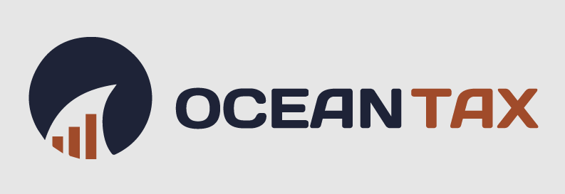
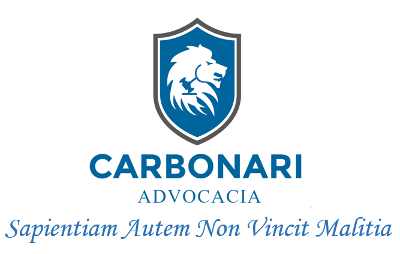
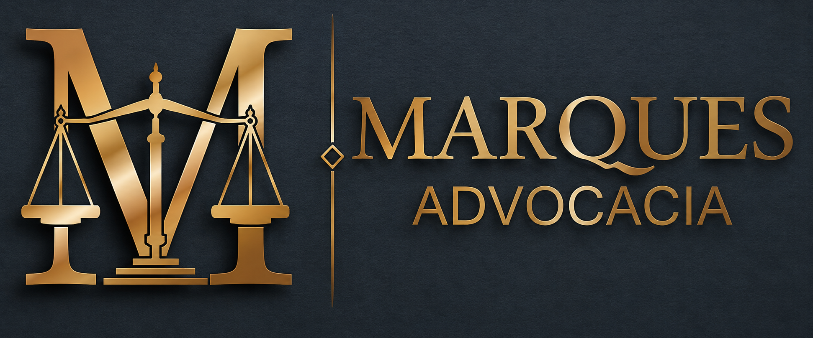

Atuamos contra a ingerência indevida do poder público sobre o patrimônio, a atividade e a liberdade do particular e da empresa brasileira.
A pessoa é fim, nunca meio. Toda restrição estatal sobre o patrimônio, a atividade ou a vida do cidadão deve ser estritamente justificada — e provada.
O agente público faz somente o que a lei autoriza. Discricionariedade não é cheque em branco: é, antes de tudo, dever de fundamentação.
Não há cliente pequeno nem causa fácil. Há cidadão sob pressão e há a lei do seu lado — e nós levamos isso até a última instância.
Quatro frentes de combate jurídico — todas voltadas à mesma vocação: proteger o particular contra a ingerência indevida do poder público e dos grandes agentes a ele associados.
Defesa em execuções fiscais, anulação de autos de infração, recuperação de tributos pagos indevidamente, planejamento tributário lícito e contencioso administrativo perante a Receita e fazendas estaduais e municipais.
Responsabilidade civil contra abusos do Estado, indenizações, contratos, sucessões, direito de família e demandas em que o particular precisa de defesa firme diante da máquina pública ou de grandes contrapartes.
Revisão de contratos abusivos, defesa contra cobranças indevidas, juros e tarifas ilegais, encerramento unilateral de conta, negativações injustas e enfrentamento de práticas que se valem do poder econômico para constranger o correntista.
Disputas possessórias, usucapião, regularização fundiária, defesa contra desapropriações abusivas, contratos de compra e venda, locação, incorporação e enfrentamento da burocracia municipal que entrava o uso legítimo da propriedade.
“Cada processo passa pelas minhas mãos. O cliente fala com o advogado, e não com um departamento. Esta é a única forma de defender uma causa com a seriedade que ela exige.”
Atuação de mais de uma década no enfrentamento de ilegalidades praticadas pelo poder público e por grandes instituições contra cidadãos, profissionais liberais e empresas. Trabalho artesanal, doutrina aplicada e estratégia individual para cada caso.
Conversa direta com o advogado para entender o conflito, ler documentos e mapear o que o Estado ou a contraparte está exigindo — e o que a lei realmente permite.
Construção da defesa em cima da Constituição, da lei e da doutrina aplicável. Definição de prazos, riscos, custos e do que se pode efetivamente alcançar.
Petições e sustentações orais conduzidas pessoalmente. Trabalho artesanal — sem terceirização — em sede administrativa e judicial, com acompanhamento contínuo.
Recursos, embargos e medidas cabíveis até as instâncias superiores. Onde houver uma porta legítima de defesa do cliente, ela será aberta.

Recuperação tributária — RS
Trabalhista — Campo Grande/MS
Cível — Campo Grande/MSA primeira escuta é sempre direta com o advogado responsável. Conte o que aconteceu — avaliamos a viabilidade da defesa e o caminho jurídico antes de qualquer compromisso.
Envie sua mensagem e conte brevemente o que aconteceu — datas, valores, notificações recebidas. O retorno é pessoal.
Conversar no WhatsApp